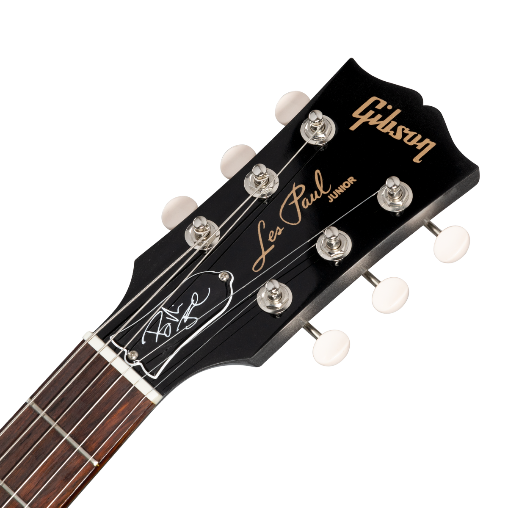

<nav class="navbar navbar-expand-lg">
    <div class="container">
      <a class="navbar-brand" href="/fooldal">Hangszerbolt</a>
      <button class="navbar-toggler" type="button" data-bs-toggle="collapse" data-bs-target="#navbarNavAltMarkup" aria-controls="navbarNavAltMarkup" aria-expanded="false" aria-label="Toggle navigation">
        <span class="navbar-toggler-icon"></span>
      </button>
      <div class="collapse navbar-collapse" id="navbarNavAltMarkup">
        <div class="navbar-nav">
          <a class="nav-link" routerLink="fooldal">Főoldal</a>
          <a class="nav-link" routerLink="hangszerek">Hangszerek</a>
          <a class="nav-link" routerLink="rolunk">Rólunk</a>
          <a class="nav-link" routerLink="kerdesek">Kérdezz tőlünk!</a>
          <a class="nav-link" routerLink="kapcsolat">Kapcsolat</a>
        </div>
      </div>
    </div>
</nav>
  
<router-outlet></router-outlet>
  
<footer class="text-center">
    <h4 class="py-2">&copy; Németh Gábor - Hangszerbolt</h4>
</footer>

